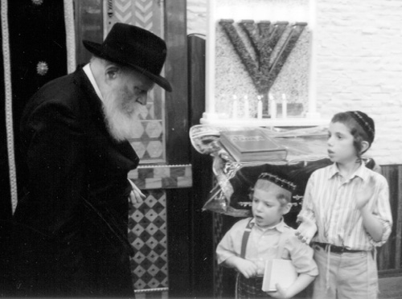

The Rebbe Cares for Each One of US
In honor of Gimmel Tammuz, we present a collection of stories that demonstrate the Rebbe’s concern and sensitivity towards each man and woman, young and old.

TO MAKE A BOY HAPPY
The mother of a talmid in a Chabad school in New York sent the Rebbe a letter in which she complained that her son, who had distinct ethnic facial features, was being taunted by the other boys in his class. The Rebbe responded that she should speak to the school administration who would certainly do all they could to stop the unpleasantness.
A few weeks went by and the mother sent the Rebbe another letter. She reported that she had complained to the hanhala, and apparently they had not dealt with the situation properly since her son still suffered from the boys in the class.
The Rebbe, who took a mother’s complaints seriously and felt the boy’s pain, called in his secretary, R’ Chadakov, and told him to call the school and ask, in the Rebbe’s name, why the painful matter had not been taken care of.
“What are they waiting for, for me to visit the school and take care of the problem?”
R’ Chadakov called the school and after conveying the Rebbe’s message, they were able to stop the harassment of the boy.
On 9 Kislev 5735, when the Rebbe went up to his room after the davening, he called for R’ Chadakov and said that this boy was having his bar mitzva kiddush that Shabbos. In order that the boy shouldn’t feel bad that his celebration was curtailed because of the Rebbe’s farbrengen, the Rebbe decided not to farbreng!
Furthermore, since the boy would be celebrating his bar mitzva with a seuda on Sunday, 10 Kislev, and many would leave early if the Rebbe would farbreng, the Rebbe said he would not be farbrenging on 10 Kislev either!
THE REBBE’S GIRL
In the early years, a shliach had yechidus with his family except for a daughter who did not come because of the freezing cold weather. The Rebbe asked, “Where is my girl?”
REBBE IS ONE THING AND HOSPITALITY ANOTHER THING
R’ Benzion Shemtov was once visiting the Rebbetzin when the Rebbe walked in. R’ Shemtov wanted to get up and leave, but the Rebbe told him to sit and asked him what he wanted to drink. R’ Shemtov felt very uncomfortable. Finally, when he saw he had no choice, he said that to him there was no difference between beverages.
The Rebbe said in surprise, “What do you mean? There are various types of drinks and a big difference between them!” R’ Shemtov then specified a drink.
The Rebbe asked him if he wanted a big cup or a small cup. The Rebbe continued to importune him until he reluctantly accepted a cup from the Rebbe.
The Rebbe, seeing his discomfort, graciously said, “Rebbe is one thing and hospitality is another thing.”
FINANCIAL AID
In 5724 a woman wrote to the Rebbe about her financial woes. As an example of her pitiful plight she said that all her neighbors went to the mountains while she had to remain in the city. Some time later, the woman was sent a sum of money so that she too could go to the mountains.
FAR BUT NEAR
R’ Nachum Rabinowitz related:
An askan entered the Rebbe’s room and saw that the Rebbe looked particularly serious. He mustered the courage to ask the Rebbe what was bothering him.
The Rebbe told him that a couple had been there to see him. They had just married and they wanted to go on shlichus. The Rebbe made it contingent on their parents’ approval. A few days later they returned with permission and the Rebbe had given his bracha.
The Rebbe suddenly looked even graver and he said, “The woman is an only sister to five brothers who are all shluchim – and the Rebbe enumerated the locations of all the brothers – and now the parents are alone, with all their children far from them.
“Right now, they are at the airport and are crying. Although they are tears of joy, they are still tears and I am with them at this moment.”
A GIFT FOR THE WIFE
R’ Tzvi Pekkar related:
Once, towards the end of my yechidus, the Rebbe said that it is customary, when traveling home, to buy a gift for the wife. The Rebbe took a hundred dollar bill and gave it to me and said, “This money is mine and I can use it as I please. Take the money and buy a gift for your wife. With the remaining money, buy Jewish books for your children.”
AN EXPLICIT RAMBAM
A certain bachur would stay in 770 on nights when yechidus was held until the Rebbe finished receiving people and went home. One time, the Rebbe suddenly left his room and saw the bachur. The Rebbe asked him what he was doing there at that late hour when he was supposed to sleep eight hours. “You don’t believe me? It says so in the Rambam. I will show it to you.”
The Rebbe went to find a Rambam while the bachur did not wait but fled the scene.
FARBRENGEN – SEGULA FOR REFUA
Once, when R’ Levi Bistritsky, rav of Tzfas, was a child, he did not feel well. His father, who went to a farbrengen without him, was asked by the Rebbe in the middle of the farbrengen, “Where is Levi?”
His father said that he did not feel well and that is why he did not bring him to the farbrengen. The Rebbe smiled and said: On the contrary; that is why you should have brought him.
A TIP FROM THE REBBE
A delivery boy was sent from the fish store to the Rebbe’s house with a delivery of fish. What was usually done was after placing the package at the door, the bell would be rung so the Rebbetzin would know the package had been delivered and the delivery boy would leave.
As the delivery boy was about to do this, he saw the Rebbe coming up the stairs. He didn’t know what to do so he stood there silently. When the Rebbe saw him, he smiled and took some nickels and dimes and gave them to him and said: This is a tip.
WHAT’S WITH ITZKE?
Mrs. Gitta Gansburg relates:
In the second year after the founding of the Reshet Oholei Yosef Yitzchok school in Natzrat, on the night of Shabbos Shuva 5734, my husband (known as Itzke) suddenly did not feel well. I called the local doctor and my concern was justified for he saw that my husband had had a heart attack and said he should be hospitalized immediately.
We went to the hospital in Afula where the doctor on duty examined him. She said, “Everything is fine. There was no heart attack. You can go home.”
I explained to her that it was Shabbos and we could not travel. She said, “I will call the head doctor and he will order you to go home,” but Itzke was as stubborn as she was and was going to prove to her that he needed to remain. Before the head doctor came he had another heart attack right there on the examining table.
He was immediately taken to the ICU where he was placed under the watchful care of the nurses and nobody was allowed to see him. Even I was given permission to see him only once an hour for only five minutes. I sat alone next to the room the entire Shabbos and worried.
As soon as Shabbos was over, I took a taxi back to Natzrat to the Lipskers. In those days, there were only a few people who had telephones in the entire neighborhood. Our friends the Lipskers had a phone, and when we needed to make a call we went to them.
I called the Rebbe and spoke with R’ Binyomin Klein. I told him what happened and about Itzke’s condition. I asked that this be reported to the Rebbe and requested a bracha for a refua shleima.
Chemi, our daughter, was living in Crown Heights at the time and Fradi our daughter was also going to Crown Heights for Tishrei and for the upcoming wedding of our nephew, Yossi Pariz. Our son Yossi also learned in a yeshiva in New York. R’ Klein asked whether I wanted my children to know about their father’s condition. I thought quickly – I knew that they couldn’t help from a distance and I did not want to spoil the simcha. I told R’ Klein not to tell.
My niece, my sister’s granddaughter, was living with me at the time. I did not want to leave her in the house alone while I would be staying with my husband in the hospital. I asked our friend Motti Tzivin to take her back to my sister in the Kfar and to tell her about my husband’s condition.
I went back to the hospital where Itzke was connected to all kinds of machines. I sat there all night and brokenheartedly said T’hillim.
In the morning, two familiar people walked in – our friend R’ Shlomo Maidanchek and R’ Efraim Wolf. “What are you doing here?” I wondered. I hadn’t told anybody about Itzke aside from those whose help I needed.
Apparently, they had called the Rebbe’s office that day, each one for his own reasons. When the secretaries conveyed their questions to the Rebbe, the Rebbe said each one should be asked how Gansburg is doing. The two of them did not know what to answer, because they did not know what had happened. However, they realized that the Rebbe was asking for a reason. They decided to travel to Natzrat and find out what was going on.
When they did not find anyone at home, they made inquiries. From the neighbors and members of the community they heard about the heart attack and immediately headed for the hospital.
I had five minutes to spend with Itzke, but the two visitors felt they had to see him too in order to be able to report back to the Rebbe. I gave up my turn in order to let them enter the ICU.
When they came out, Efraim Wolf said half seriously and half jokingly, “Why are you making a big deal out of this? There is nothing wrong with Itzke. He jokes around as always and looks great!”
Another hour went by and I went into his room. A nurse called me and said, “There is a phone call for you. They say it’s from America.
I grabbed the phone as my heart rate accelerated. I was sure the call was from the secretariat, but no, it was my son Yossi and son-in-law Zalman. “How is Abba?” they wanted to know.
“Hashem will help,” I sighed.
“The Rebbe heard about it today. R’ Binyomin Klein told him, and do you know what the Rebbe said? ‘Itzke Gansburg? It doesn’t suit him.’ The Rebbe repeated that three times!”
“Really?” I asked excitedly. “The Rebbe said, ‘It doesn’t suit him?’”
Oh no! Why did I say that out loud? In the bed next to me, the loyal Chassid began disconnecting himself from the machines one by one. If the Rebbe said it didn’t suit him, there was no heart attack and no need for IVs.
The nurse went into hysterics, thinking the patient had gone mad and five doctors burst into the room. They had been called to subdue the dangerous patient.
“Wait!” I tried to explain to them. “He did not lose his mind.”
Nobody was listening to me and I was pushed outside. Well, Itzke managed to convince them that he wasn’t crazy, because not too long afterward, Dr. Lev came out and said in amazement, “Now I know what a real Chassid is!”
But they reconnected Itzke to the machines anyway. I relaxed, having heard what the Rebbe said, and I knew that the children were with me from a distance.
WHAT DOES YOUR MOTHER SAY?
Mrs. Gansburg continues:
A short while later the Yom Kippur War began. The hospital decided to release Itzke in order to make room for wounded soldiers.
When he felt better, Itzke felt he wanted to see the Rebbe again. I did not particularly like this idea. I knew what happens in 770 with the pushing and Itzke had just begun to get back to himself. On the other hand, as the doctor had warned me, I was afraid to upset him. The doctor did not like the idea of his traveling and the effort it would entail, but he warned me not to talk about it to Itzke. Back then, they believed that when a person undergoes a heart attack, it was likely that the person would enter a depression. The doctor advised me to push him off until he had more fully recovered.
I gently suggested that he consult with the Rebbe before making his final decision about traveling. I did not tell anyone that the doctor privately advised me not to let him travel. Itzke agreed and we asked our mechutan, R’ Zalman Chanin, to ask the Rebbe about it when he had yechidus with his family in Cheshvan for his birthday.
In yechidus, our daughter asked the Rebbe about Itzke going to the Rebbe. “What should I tell my father?” she asked.
“What does your mother say?” asked the Rebbe.
“My mother says we should do as the Rebbe tells us,” Chemi replied.
“What does the doctor say?” asked the Rebbe.
“The doctor agrees to the trip,” she said.
“Tell your mother that she doesn’t need to worry and she can tell your father the truth. The doctor is not familiar with 770 and the danger in the crowding. Over here we don’t eat, we don’t sleep, there is pushing. Tell the doctor what it’s like and if he still agrees, then fine. If not, don’t let him come.”
And that is how the plans for a trip were canceled for that time.
EXPRESS LETTER TO A CHILD
The son of a shliach from Texas recalls how when he was in the first grade, he and his friends decided to start a pencil gemach. Little Chaim’ke told his father how they planned on raising money for the gemach. The father could have given his son two dollars for the purchases, but the child said they were going to do as the adults did. “We will put on a play and all the parents will come and buy tickets and we will use the money to buy pencils.” The father nearly retorted that it was easier to give him the two dollars without having to attend the event, but he kept quiet.
The event took place on Motzaei Shabbos. That Shabbos morning, the mailman knocked at the door and said he had a registered letter. It was an express letter written to six year old Chaim by Rabbi Schneersohn.
They asked Chaim, “Why did the Rebbe send you an express letter?”
He replied, “We did everything like you. Just like when you make a dinner, you write to the Rebbe, I also wrote to the Rebbe for a bracha.”
The Rebbe wrote him a bracha for hatzlacha in the letter and said it should be more successful than anticipated. Instead of $18 that they had thought they would raise, they raised $19!
YECHIDUS WITH THE REBBE
R’ Yechezkel Besser related:
In 5712 I got a message from the Rebbe that a certain baalas t’shuva wanted to leave her parents’ home in order to be able to live a Torah life, but she needed a job to support herself. I hired her as a secretary in my business.
After two or three months, my partner said: I want a favor from you. Tonight I have an appointment with the Lubavitcher Rebbe – he said the secretary had arranged the appointment. I need to know what I should do. Would you come with me?
I agreed to join him and we arranged that he would come to my house in Crown Heights after 10 and we would go together for the yechidus at 11.
At 10:30 he came to my house and said he was not going to the Rebbe that night. I asked him what happened and he said: I have a relative in Crown Heights who is sick and I haven’t seen her in a long time. She recently underwent an operation to remove a malignant tumor and now it came back and the doctors are divided in their opinion. One doctor says she cannot be operated on and another one says they must. Since I’m here already, I want to take the opportunity to visit her.
Obviously, my partner had no idea what yechidus with the Rebbe meant. I told him: This is the best time to see the Rebbe and tell him the problem and consult with him!
He agreed and we went to 770 together. Our yechidus began at 2:30 in the morning. The Rebbe welcomed us graciously. He asked my partner to sit down and he sat. Then the Rebbe asked me to sit. I said: I don’t sit. I’m a Chassid.
My partner gave the Rebbe a note with the relative’s name on it. The Rebbe’s face instantly changed to one that was very serious as he read the note. I noticed the change and that is when I first saw that he is a Rebbe!
Then my partner gave his relative’s history and the Rebbe asked a few questions. The Rebbe suddenly asked in Yiddish, “Is she religious?”
“No.”
The Rebbe asked, “Does she herself know what her situation is?”
“I don’t know.”
The Rebbe said, “She should commit to doing something that will be to her benefit.”
My partner said, “Of course, if it’s not difficult.”
The Rebbe: “Like lighting Shabbos candles.”
My partner said, “I am sure she lights candles.”
Then the Rebbe asked emotionally, “Then how can you say that a Jewish woman knows nothing about Judaism?”
“But I don’t know to what extent.”
The Rebbe: “Try to get her to give some coins to tz’daka before she lights Shabbos candles.”
The yechidus lasted more than two hours. The Rebbe asked my partner whether he has children and what chinuch they received and spoke about this at length.
My partner had a little boy and the Rebbe urged him to send him to yeshiva when he got older. My partner said he wanted to send him to college so he would be educated. The Rebbe said, “Tell me, you don’t want him to marry a gentile, correct?”
My partner nodded and the Rebbe said: “He will go to college and find a girl that he likes – why shouldn’t he marry her?”
My partner nodded his agreement, and the Rebbe said, “You need to think about that.” And the Rebbe went on to talk about this at length.
TREMENDOUS SENSITIVITY
One of the Rebbe’s secretaries related:
When the Rebbe was still receiving people privately, it happened one Tishrei that the list consisted of 1500 people that were scheduled for an appointment.
Yechidus was on Tuesday and Wednesday nights. On Tuesday night, yechidus went from 8 at night until 10 in the morning. I said to the Rebbe that maybe the Wednesday appointments should be postponed until Thursday night to preserve the Rebbe’s health.
The Rebbe said: If we postpone yechidus, then Jews in Eretz Yisroel and Europe who need yechidus will have to stay over Shabbos, because they won’t be able to leave New York on Friday. They won’t be able to spend Shabbos with their family and will also lose a day of work because in Eretz Yisroel they work on Sunday, and it will all be because of me. So better not to postpone yechidus to Thursday, but leave it as is, on Wednesday.
The Rebbe held yechidus the next night and it lasted until 11:30 in the morning.
IS THE REBBE EXEMPT? NO!
A carpenter was carrying a ladder when he entered 770, when he suddenly felt it become lighter. He looked behind him and saw that the Rebbe had come and was helping him. The carpenter asked the Rebbe to let him carry the ladder on his own but the Rebbe told him, “Where does it say that Menachem Mendel Schneersohn does not have to fulfill the mitzva of ‘you shall surely help him?’”
THE REBBE CALMS A CHILD IN YECHIDUS
The Segals of Afula went with their two and a half year old daughter to a yechidus with the Rebbe. The child burst into tears. She wanted to touch the telephone on the Rebbe’s desk and her mother motioned to her that she shouldn’t touch it.
When the Rebbe saw her crying, he took a silver half dollar out of his drawer and banged on the desk. The girl immediately stopped crying. The Rebbe gave her the coin and she said, “thank you,” and the Rebbe said, “Tzu gezunt” (to your health).
The parents took this wish as a segula that the Rebbe associated with the coin and for thirty years used the coin for all illnesses, births and problems.
PERSONAL REQUEST OF EACH CHILD
One autumn, when the Rebbe walked from 770 to his home, he saw a group of children playing. Since it was chilly, the Rebbe went over to each child and asked him to go into the beis midrash to put on a coat.
The Rebbe did not call out a general statement, “Children, put on your coats.” He asked each child personally.
NO FORGETTING
One of Anash related:
It was in the early 70’s when I met a bachur in the small zal who came from England to see the Rebbe. We got into a conversation in which I learned that his parents did not have children for many years. It was only after they received the Rebbe Rayatz’s bracha that their son, this bachur, was born.
Over twenty years had passed since he was born and he was about to marry. His parents asked him to travel to the Lubavitcher Rebbe to ask for his bracha.
He had yechidus that night and after a short time he exited the Rebbe’s room looking astounded and overwrought.
We did not have to urge him to tell us what had got him so excited. He said, “I went in holding the original letter that my parents received from the Rebbe Rayatz. I showed the letter to the Rebbe and asked for his bracha for my wedding.
“The Rebbe glanced at the letter and then blessed me. The Rebbe said that at the very same time that my parents’ letter about not having children had arrived, a letter from my uncle had also arrived in which he related his parnasa problems. ‘I haven’t heard from him since,’ said the Rebbe.
“You can well imagine how much the Rebbe had to deal with in the more than twenty years since then and yet he remembered my parents’ letter and how my uncle had sent a letter at the same time about his financial troubles.”
Menachem Ziegelboim. "The Rebbe Cares for Each One of US." Beis Moshiach, no. 838 (June 22, 2012).